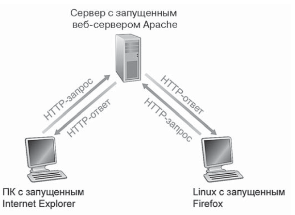
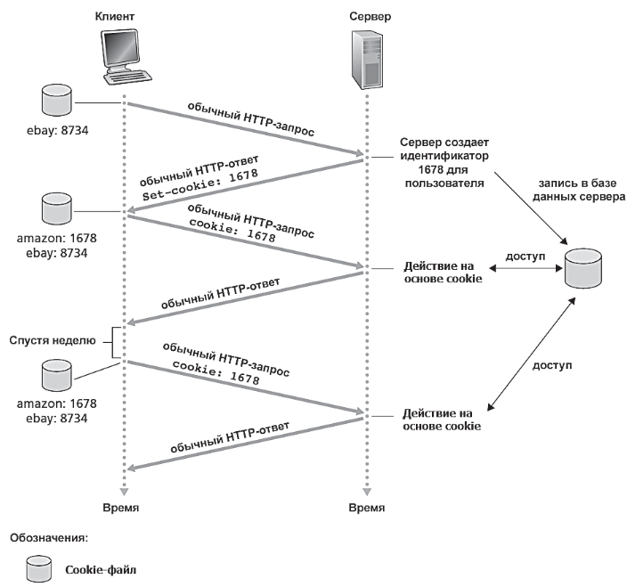

В начале 90-х на свет появилось главное приложение Интернета - Всемирная паутина. Одна из возможных причин, почему Всемирная паутина привлекла пользователей — это то, что принцип ее функционирования — работа по запросу.
HTTP (HyperText Transfer Protocol) (протокол передачи гипертекста) — сетевой протокол прикладного уровня, который изначально предназначался для получения с серверов гипертекстовых документов в формате HTML, а с течением времени стал универсальным средством взаимодействия между узлами как Всемирной паутины, так и изолированных веб-инфраструктур. Определение по основным документациям: HTTP — протокол уровня приложений для распределённых, объединённых, гипермедийных информационных систем, используемый в глобальной информационной инициативе Всемирной паутины с 1990 года.
HTTP реализуется в двух частях приложений: клиентской и серверной. Клиентская и серверная части программ, исполняемые на различных конечных системах, общаются друг с другом, обмениваясь сообщениями HTTP. Протокол HTTP определяет структуру этих сообщений и порядок обмена между клиентом и сервером. Если конкретнее, HTTP определяет порядок того, как веб-клиенты запрашивают веб-страницы с веб-сервера и как сервер передает эти страницы клиентам.
Перед тем как детально объяснить HTTP, сделаем краткий обзор терминологии Всемирной паутины.
Веб-страница (веб-документ) состоит из объектов.
Объект - это простой файл, имеющий уникальный URL-адрес, например файл формата HTML, изображение в формате JPEG, Java-апплет или видеоклип.
Большинство веб-страниц состоит из базового HTML-файла, который содержит ссылки на несколько объектов. Например, если веб-страница содержит HTML-текст и пять рисунков в формате JPEG, это значит, что веб-страница содержит шесть объектов: базовый файл плюс пять изображений.
Базовый файл содержит в себе ссылки на другие объекты, в виде их URL-адресов, находящихся в тексте базового файла. Каждый URL-адрес состоит из двух частей: имени сервера, содержащего объект и пути до этого объекта.
Например, URL-адрес http://www.someSchool.edu/someDepartment/picture.gif содержит адрес хоста www.someSchool.edu и имя пути /someDepartment/picture.gif.
Мы будем использовать слова браузер и клиент как взаимозаменяемые, так как веб-браузеры реализуют клиентскую сторону протокола HTTP. Веб-серверы, реализующие серверную сторону HTTP, содержат веб-объекты, на которые указывают ссылки.
Когда пользователь запрашивает веб-страницу (например, щелкает по гиперссылке), браузер отправляет HTTP-запрос объектов этой страницы серверу. Сервер получает запрос и отвечает сообщением HTTP, которое содержит объекты.
HTTP использует TCP в качестве базового транспортного протокола. Простой порядок взаимодействия:
Передача по протоколу TCP надежна, а это означает, что каждый HTTP-запрос, посланный клиентским процессом, обязательно прибудет к серверу, и наоборот, каждый HTTP-ответ, посланный сервером, обязательно будет получен клиентом. Поэтому нам не нужно заботиться о потере данных, т.к. это все работа протокола TCP и протоколов уровней стека более низкого уровня.
Важно отметить, что сервер отправляет запрошенные файлы клиенту, не сохраняя какой-либо информации о клиенте. Если один и тот же клиент запросит один и тот же файл дважды, то HTTP-сервер отправит его еще раз, забыв, что он только что это делал. Таким образом, HTTP-сервер не обрабатывает информации о клиенте, поэтому говорят, что HTTP - это протокол без сохранения состояния.
HTTP-сервер должен отвечать на массу запросов посылаемых клиентом. Когда взаимодействие происходит через TCP, то разработчик приложения должен принять решение о том, как отправлять каждую пару запрос-ответ - через отдельное или через одно и то же TCP-соединение.
Рассмотрим этапы передачи веб-страницы в случае непостоянного соединения. Предположим, что страница состоит из базового HTML-файла и десяти изображений в формате JPEG и все эти 11 объектов находятся на одном сервере. Пусть URL-адрес для базового HTML-файла имеет вид: http://www.someSchool.edu/someDepartment/home.index
Вот что происходит:
Заметим, что спецификация протокола HTTP определяет только протокол взаимодействия между программой клиента и программой сервера, но ничего не говорит о том, как веб-страница должна интерпретироваться клиентом, поэтому могут существовать разночтения от браузера к браузеру.
Таким образом, непостоянное HTTP-соединение - это соединение, при котором TCP-соединение передает ровно одно сообщение запрос и одно сообщение ответ. В примере выше было установлено ровно 11 TCP-соединений.
Тут намеренно не уточнялось получил ли клиент 10 изобраажений серией из 10 последовательных TCP-соединений, или параллельно. Большинство современных веб-браузеров в режиме по умолчанию открывают 5-10 параллельных TCP-соединений, и каждый обрабатывается параллельно. Если установить ограничение на 1 одновременное TCP-соединение, то мы получим простой случай очереди TCP-соединений.
Произведем оценку времени, проходящего между отправкой клиентом HTTP-запроса базового документа до момента, когда весь файл (включая содержимое) получен. Для этого определим время оборота (round-trip time, RTT), т.е. время требуемое пакету малого размера для передачи от клиента к серверу и обратно (также известно как время двусторонней задержки).
RTT включает:
Рассмотрим на конкретном примере. Допустим пользователь кликает на гиперссылку.
У непостоянного соединения есть ряд недостатков
Во-первых, для каждого запрашиваемого объекта должно устанавливаться и обслуживаться новое соединение. Для каждого из соединений протокол TCP должен выделить буфер, а также сохранить несколько переменных как на стороне клиента, так и на стороне сервера. Это может быть затруднительно для веб-сервера обслуживающих сотни, тысячи или даже миллионы одновременных соединений.
Во-вторых, передача каждого объекта занимает задержку равную \(2RTT+T_{download}\)
В случае постоянного соединения сервер после отправки ответа оставляет TCP-соединение открытым. Через одно и то же соединение можно отправить последовательность запросов и ответов между одним и тем же клиентом и сервером. Например, одним TCP-соединением можно передать всю HTML-страницу со всем своим содержимым.
Более того, через одно постоянное соединение можно отправить одному и тому же клиенту много веб-страниц, размещенных на том же сервере. Так реализуется конвейеризация - запросы объектов делаются один за другим без ожидания ответов на запрос от сервера. Сервер отвечает на каждый запрос, отправляя в ответ запрошенный объект. Обычно TCP-соединение закрывается после некоторого тайм-аута неиспользования.
В протоколе HTTP определено 2 типа сообщений - запрос (request) и ответ (response).
GET /somedir/page.html HTTP/1.1
Host: www.someschool.edu
Connection: close
User-agent: Mozilla/5.0
Accept-language: fr
Начнем с того, что сообщение представлено обычными ASCI-символами. В сообщении 5 строк, каждая из которых заканчиавается переносом строки, а последняя двумя переносами. На самом деле GET-запрос необхяательно должен иметь эти 5 строк, обзем случае он может содержать от одной и более строк.
Ниже предстален общий формат GET-запроса.
МЕТОД URL ВЕРСИЯ //СТРОКА ЗАПРОСА
ИМЯ_ПОЛЯ_ЗАГОЛОВКА: ЗНАЧЕНИЕ//СТРОКА ЗАГОЛОВКА
ИМЯ_ПОЛЯ_ЗАГОЛОВКА: ЗНАЧЕНИЕ//СТРОКА ЗАГОЛОВКА
ИМЯ_ПОЛЯ_ЗАГОЛОВКА: ЗНАЧЕНИЕ//СТРОКА ЗАГОЛОВКА
//ПУСТАЯ СТРОКА
ТЕЛО СООБЩЕНИЯtip: Тело сообщения пусто при использовании метода GET и содержит информацию, если используется метод POST.
Чаще всего метод POST применяется со стороны клиента, когда пользоаетль заполняет форму и ответ со стороны сервера должен отличаться в заисимости от введенных клиентом данных, например, поисковой запрос.
Иногда вместо этого используется метод GET, в котором особый запрос клиента передается в URL. Допустим, в форму введены значения monkey и bananas, то тогда GET-запрос может иметь следующий вид:
GET /somedir/animalsearch?monkeys&bananas HTTP/1.1
Host: www.someschool.edu
Метод HEAD аналогичен методу GET. Когда серер получает с помощью него запрос, то он отпраляет отетное HTTP-сообщение, но не пересылает в нем объект. Этот метод чаще всего используется для отлади со стороны разработчиков.
Метод PUT часто испольузется соместно с инструментами веб-публикации. Он позволяет загружать объъект по указанному адресу на конкретный веб-серверу. Он также используется приложениями, требующщими загрузки объектов на веб-серверы.
Метод DELETE позволяет пользователю удалять объект на веб-сервере.
Ниже приведено типичное ответное сообщение, используемое протоколом HTTP.
HTTP/1.1 200 OK
Connection: close
Date: Tue, 09 Aug 2011 15:44:04 GMT
Server: Apache/2.2.3 (CentOS)
Last-Modified: Tue, 09 Aug 2011 15:11:03 GMT
Content-Length: 6821
Content-Type: text/html
(данные данные данные данные данные...)Вариации строки состояния:
Общий формат сообщения-ответа протокола HTTP:
ВЕРСИЯ КОД_СОСТОЯНИЯ ФРАЗА //СТРОКА СОСТОЯНИЯ
ИМЯ_ПОЛЯ_ЗАГОЛОВКА: ЗНАЧЕНИЕ//СТРОКА ЗАГОЛОВКА
ИМЯ_ПОЛЯ_ЗАГОЛОВКА: ЗНАЧЕНИЕ//СТРОКА ЗАГОЛОВКА
ИМЯ_ПОЛЯ_ЗАГОЛОВКА: ЗНАЧЕНИЕ//СТРОКА ЗАГОЛОВКА
//ПУСТАЯ СТРОКА
ТЕЛО СООБЩЕНИЯНа Windows можно испытать на практике работу HTTP-протокол. Для этого необходимо ввести следующее в командной строке Windows:
telnet cis.poly.edu 80
GET /~ross/ HTTP/1.1
Host: cis.poly.edu
В результате этой команды открывается TCP-соединение с хостом cis.poly.edu по порту 80 и ему отправляется сообщение-запрос.
Ранее было упомянуто, что HTTP-серввер не сохраняет состояние соединение (т.е. информации о клиенте). Это позволяет HTTP-серверам иметь высокий показатель latency, открывая одновременно тысячи TCP-соединений. Однако это ограничиввает возможности сервера в тех приложениях, где необходима идентифкация группы или конкретных пользователей. Например, сервер нуобходимо ограничивать права пользователей в зависимости от его идентифкации. Для этих целей в HTTP используются cookie. Механизм cookie позволяет сайтам отслеживать состояние пользовательсого соединения.
Технология cookie включает 4 основных компонента:
Представим следующую ситуацию, клиент выходит в интернет со своего ПК, используя браузер Chrome и в первый раз посещает сервер Amazon.com. Допустим, ранее он посещал сайт eBay.
amazon: 1678
ebay: 873Благодаря механизму cookie сервер может знать когда и какие страницы посетил данный клиент, не зная никакой персональной информации о нем. Так он может, например, организовать карту покупок конкретного клиента, которая будет сохранятся даже после окончания сеанса пользователя на сайте.
Amazon исходя из истории покупок пользователя, записанных в базе данных под идентификатором пользователя может рекомендовать пользователю конкретные товары.
Если вдобавок лиент зарегистрируется на сайте, передав своем имя, номер телефона, электронную почту и номер карты, то сервер запишет эти данные в свою базу данных, связав имя клиента и его идентифкационный номер.
Таким образом, cookie-механизм создает как бы дополнительный сеансовый уровень поверх протокола HTTP, который не сохраняет информацию соединения.
Веб-кэш (также называемый прокси-сервером) - это элемент серти, который обрабатывает HTTP-запрос в дополнение к "настоящему" серверу. Для этого на прокси-сервере имеется собственное дисковое хранилище, куда помещаются копии недавно запрошенных объектов.
Допустим, что клиент запрашивает объект http://www.someschool.edu/campus.gif:
Заметим, что веб-кэш (прокси-сервером) в выше описанной ситуации является и сервером, и клиентом.
Обычно прокси-серверы устанавливают интернет-провайдеры.
Технология веб-кэша распространена в интернете по двум причинам:
Проиллюстрируем выигрыш от использования прокси-сервера на конкретном примере.
Условия задачи:
Рассмотрим альтернативную ситуацию, в которой вместо модернизации сети используется прокси-сервер. Добавим к уже имеющимся условиям следующие:
Таким образом, прокси-сервер обеспеичвает еще больший выигрыш в задержке, не требуя расходов на модернизацию сети.
С появлением сетей доставки контента (Content Distribution Networks, или CDN) прокси-серверы стали играть важную роль в интернете. Компании-провайдеры CDN инсталируют территориально распределенные прокси-серверы интернета, тем самым локализуя трафик.
Несмотря на то, что кэширование уменьшает время ответа пользовательскому браузеру добавляется еще одна проблема - копия объекта, находящаяся в кэше может устареть с теъ пор, пока она была прокэширована клиентом, т.е. объект размещенный на веб-сервере мог измениться.
HTTP-протокол имеет механизм размещения этой проблемы. позволяя прокси-серверу проверять актуальность объекта в памяти. Для жтого применяется т.н. условный GET-запрос со строкой заголовка If-Modified-Since:.
Допустим, что прокси-сервер от имени браузера отправляет запрос сереру:
GET /fruit/kiwi.gif HTTP/1.1
Host: www.exotiquecuisine.com
Затем веб-серев отправляет ответное сообщение с запрошенным объектом прокси-серверу:
HTTP/1.1 200 OK
Date: Sat, 8 Oct 2011 15:39:29
Server: Apache/1.3.0 (Unix)
Last-Modified: Wed, 7 Sep 2011 09:23:24
Content-Type: image/gif
(данные данные данные данные данные...)
Прокси-сервер перенаправляет объект браузеру, но, кроме того, сохраняет у себя в кэше его локальную копию с датой его последнего изменения.
Допустим, спустя неделю браузер опять запрашивает этот объект через проси-сервер. Прокси-сервер отправляет следующий запрос на веб-сервер:
GET /fruit/kiwi.gif HTTP/1.1
Host: www.exotiquecuisine.com
If-modified-since: Wed, 7 Sep 2011 09:23:24Если объект не был изменен и строки If-modified-since: и Last-Modified: совпадают, то веб-сервер отправит следующий ответ буз запрашиваемого объекта:
HTTP/1.1 304 Not Modified
Date: Sat, 15 Oct 2011 15:39:29
Server: Apache/1.3.0 (Unix)
(пустое тело сообщения)